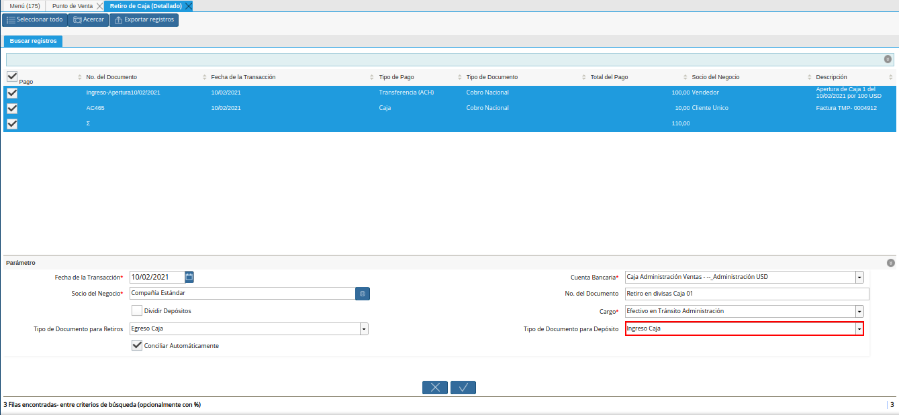
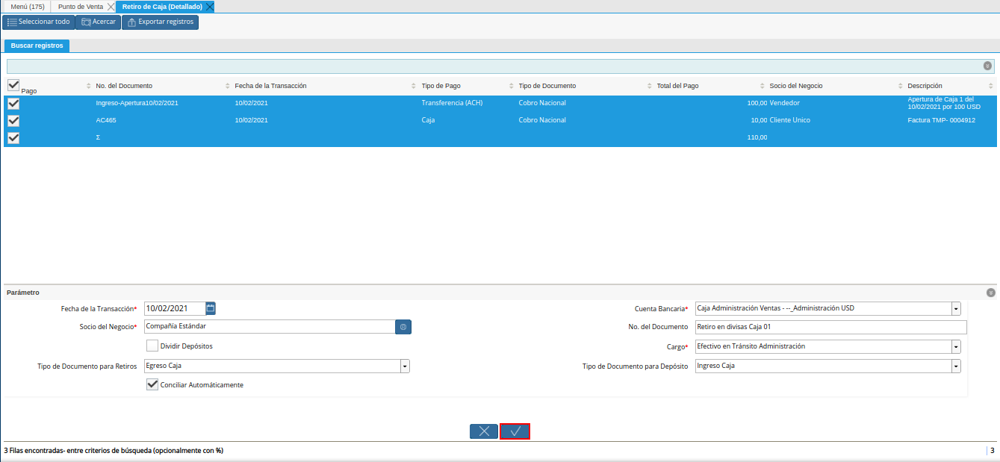
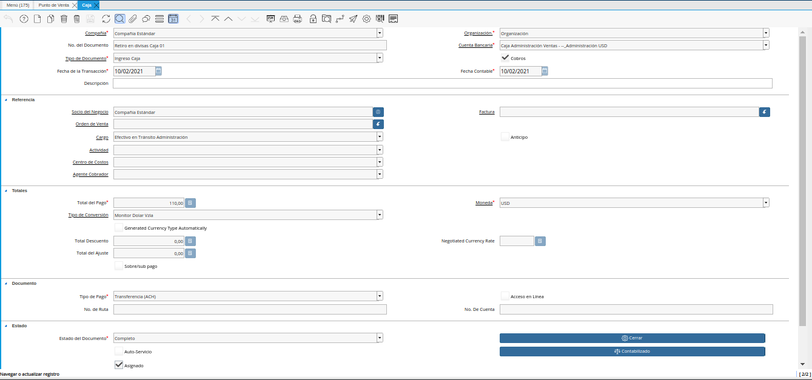

Retiro Detallado de Punto de Venta¶
Un retiro de fondos es realizado cuando por algún motivo se saca dinero de alguna de las cajas donde es realizado el proceso de venta de productos, la mayoria de las veces suele suceder por un alivio de caja, cancelación de un gasto, entre otros. A continuación es explicado el procedimiento regular para reflejar en ADempiere, un retiro de fondos.
A continuación, se específica el procedimiento que se debe realizar para retirar correctamente los fondos de caja POS.
Ejecución del Proceso¶
Ubique y seleccione en el menú de ADempiere, la carpeta “Gestión de Ventas”, luego seleccione la carpeta “Órdenes de Venta”, por último seleccione la carpeta “Punto de Venta”. Para finalizar, seleccione la ventana “Punto de Venta”.
Imagen 1. Menú de ADempiere

Si en el transcurso del día, se presenta un retiro de fondos en alguna de las cajas en la cual se encuentran realizando transacciones desde el punto de venta, seleccione la opción “Retiro de Caja (Detallado)”, ubicada en el menú desplegado por el icono “Proceso” de la barra de herramientas de la ventana “Punto de Venta”, explicada en el documento Barra de Herramientas del Punto de Venta elaborado por ERPyA.
Imagen 2. Opción Crear Retiro Detallado de POS

Podrá visualizar la ventana “Retiro de Caja (Detallado)”, con diferentes campos que permiten filtrar la información en base a lo requerido por el usuario para reflejar el retiro de fondos de la caja donde se encuentra realizando sus operaciones de venta.
Imagen 3. Ventana Retiro de Caja (Detallado)
Como ejemplo del proceso de retiro de fondos desde el punto de venta se tienen las siguientes transacciones en “Caja 01”:
Transacciones del punto de venta del día “10/02/2021”.
Apertura de Caja
100,00 en Moneda “USD”
Formas de Pago Recibidas por Ventas
Efectivo en Moneda “USD”
10,00
Transferencia en Moneda “VES”
5.917.563,54
Pago Móvil en Moneda “VES”
70.000.000,00
Débito Directo en Moneda “VES”
40.577.378,71
El retiro detallado de la caja, se debe realizar por moneda. Para el caso de la moneda “VES”, se debe tildar de manera Obligatoria, el check “Dividir Depósitos”, para que ADempiere genere un egreso de caja POS por el total de los movimientos con dicha moneda y un ingreso a caja administrativa por cada uno de los movimientos de cobro de dicha moneda.

En el campo “Terminal PDV”, podrá visualizar el terminal asociado al punto de venta desde el que accedió al proceso.
Imagen 4. Campo Terminal PDV

En el campo “Cuenta Bancaria”, podrá visualizar la cuenta bancaria de la caja POS asociada al punto de venta desde el que accedió al proceso.
Imagen 5. Campo Cuenta Bancaria

Seleccione en el campo “Socio del Negocio”, el socio del negocio vendedor por el cual requiere filtrar la información.
Imagen 6. Campo Socio del Negocio

Seleccione en el campo “Tipo de Pago”, el tipo de pago por el cual requiere filtrar la información.
Imagen 7. Campo Tipo de Pago

Seleccione en el campo “Fecha de la Transacción”, el rango de fecha por la cual requiere filtrar la información.
Imagen 8. Campo Fecha de la Transacción

Seleccione en el campo “Moneda”, la moneda por la cual requiere filtrar la información.
Imagen 9. Campo Moneda

Seleccione la opción “Comenzar Búsqueda”, para filtrar la información en base a lo seleccionado anteriormente.
Imagen 10. Opción Comenzar Búsqueda

Podrá visualizar los diferentes movimientos de la caja en base a lo seleccionado.
Imagen 11. Resultado de Búsqueda

Seleccione los movimientos correspondientes al retiro que requiere realizar.
Imagen 12. Selección de Movimientos

Seleccione en el campo “Fecha de la Transacción”, la fecha con la que serán generados los documento.
Imagen 13. Campo Fecha de la Transacción

Seleccione en el campo “Cuenta Bancaria”, la cuenta bancaria en la cual ingresarán los movimientos seleccionados.
Imagen 14. Campo Cuenta Bancaria

Seleccione en el campo “Socio del Negocio”, el socio del negocio correspondiente para el ingreso.
Imagen 15. Campo Socio del Negocio

Introduzca en el campo “No. del Documento”, el número de documento para los documentos de egreso e ingreso.
Imagen 16. Campo No. del Documento

En el caso de los retiros en moneda “VES”, tilde el check “Dividir Depósitos”, para generar un documento de egreso de la caja POS con la suma de todos los cobros y tantos documentos de ingreso a la caja administrativos como movimientos seleccionados en el proceso.
Imagen 17. Check Dividir Depósitos

Seleccione en el campo “Cargo”, el cargo que justifica el retiro de fondos del dinero de la caja. Para este caso, es utilizado como ejemplo el cargo “Efectivo en Tránsito Administración”.
Imagen 18. Campo Cargo

Seleccione en el campo “Tipo de Documento para Retiros”, el tipo de documento con el cual será generado el egreso. Para este caso, se utiliza el tipo de documento “Egreso Caja”.
Imagen 19. Campo Tipo de Documento para Retiros

Seleccione en el campo “Tipo de Documento para Depósito”, el tipo de documento con el cual será generado el ingreso. Para este caso, se utiliza el tipo de documento “Ingreso Caja”.

Imagen 20. Campo Tipo de Documento para Depósito
El check “Conciliar Automáticamente”, permite la conciliación automática de los movimientos seleccionados.
Imagen 21. Check Conciliar Automáticamente

Seleccione la opción “OK”, para ejecutar el proceso.

Imagen 22. Opción OK
Note
Por cada retiro de fondo realizado desde el punto de venta, ADempiere crea en la ventana “Caja” los siguientes documentos:
Un documento de pago asociando en el campo “Cuenta”, la caja POS desde la cual se ejecuta el proceso. Dicho documento se puede visualizar en la ventana “Caja”.
De igual manera crea un documento de cobro asociando en el campo “Cuenta”, la caja adiministrativa seleccionada en el campo “Cuenta Bancaria” del proceso “Retiro de Caja (Detallado)”. Dicho documento se puede visualizar en la ventana “Caja”.
Consulta de Pago y Cobro Generados en Caja¶
Ubique los registros creados por el retiro de fondos en la ventana “Caja”, con ayuda del número de documento ingresado en el campo “No. del Documento”, de la ventana “Retiro de Caja (Detallado)”.
Imagen 23. Número de Documento del Retiro de Fondos

Podrá visualizar en la parte inferior derecha de la ventana “Caja”, el número de registros creados con el valor ingresado en el campo “No. del Documento”, de la ventana “Retiro de Caja (Detallado)”.
Imagen 24. Documento de Pago Generado en Caja

Podrá visualizar el registro de “Pago” creado desde la ventana “Retiro de Caja (Detallado)”.
Imagen 25. Pago Creado desde la Ventana Retiros de Puntos de Venta

Seleccione el icono “Próximo Registro”, ubicado en la barra de herramientas para visualizar el registro de “Cobro” creado desde la ventana “Retiro de Caja (Detallado)”.

Imagen 26. Cobro Creado desde la Ventana Retiros de Puntos de Venta
Consultar Registro en Cierre de Caja¶
Cada forma de pago y moneda por la que se realiza un retiro de fondos, se genera un documento de egreso y uno de ingreso en la ventana “Caja”. Por cada documento generado se crea una línea con el mismo asociado, en la pestaña “Línea de Cierre de Caja”, de la ventana “Cierre de Caja” correspondiente a los registros creados en estado “Borrador al realizar la apertura de caja.
Registro de “Caja Administrativa” en la ventana “Cierre de Caja”.
Imagen 27. Registro de Retiro Generado en Caja Administrativa

Registro de “Caja 01” en la ventana “Cierre de Caja”.
Imagen 28. Registro de Retiro Generado en Caja 01